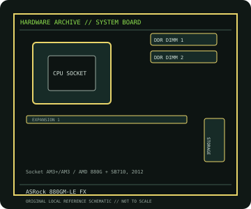

[ INDIVIDUAL COMPONENT // MOTHERBOARDS ]
ASRock 880GM-LE FX
880GM-LE FX: Socket AM3+/AM3 / AMD 880G + SB710, 2012; revision-aware Socket motherboard specifications, CPU/BIOS qualification, board size, memory, expansion, storage and I/O.

IDENTIFICATION: 880GM-LE FX model; verify silkscreen/PCB revision and BIOS chip label in person. Confirm the exact silkscreen, revision and firmware on the physical board; near-name variants can use different BIOS files and connectors.
Specifications
| Catalog subcategory | AMD Socket platforms |
|---|---|
| Exact board / model | 880GM-LE FX — 880GM-LE FX model; verify silkscreen/PCB revision and BIOS chip label in person |
| Platform and chipset | Socket AM3+/AM3 / AMD 880G + SB710, 2012; AMD 880G northbridge with SB710 southbridge and integrated Radeon HD 4250 graphics. |
| CPU and BIOS support | AM3+/AM3; ASRock lists selected FX, Phenom II, Athlon II and Sempron CPUs; consult the model CPU table and minimum BIOS for exact support. |
| Memory | Two DDR3 DIMM sockets, dual-channel, up to 8 GB according to ASRock; listed overclocked memory rates are CPU and module dependent. |
| Board size / form factor | Micro-ATX, 244 × 244 mm. |
| Expansion and storage | One PCIe 2.0 x16, one PCIe x1 and two PCI slots; six SATA 3 Gb/s ports and one PATA channel. |
| Rear I/O and compatibility | VGA and DVI-D video outputs, USB 2.0, Gigabit Ethernet, 5.1-channel audio, PS/2 and legacy headers; no HDMI connector. Although AM3+ FX processors are supported selectively, not every FX CPU is qualified; match the exact ASRock CPU table and BIOS. Use DDR3 memory, confirm chassis/CPU power limits and do not assume integrated graphics are available with every CPU. |
Compatibility and revision notes
Although AM3+ FX processors are supported selectively, not every FX CPU is qualified; match the exact ASRock CPU table and BIOS. Use DDR3 memory, confirm chassis/CPU power limits and do not assume integrated graphics are available with every CPU.
Before installation, compare the physical board and revision against the manufacturer manual. Check socket condition, CPU power requirements, cooler/chassis clearance, DIMM population order, power connectors and any shared PCIe or SATA lanes. Update firmware only with the exact model’s supported procedure.
Preservation and repair
Record the PCB revision, BIOS identifier, serial/date code, installed CPU and memory, accessories, known faults, repairs and test conditions. Use ESD-safe handling and inspect for socket damage, corrosion, leaking capacitors and loose conductive hardware before power-up.
Sources & further reading
- ASRock 880GM-LE FX specificationsManufacturer product specification and board feature reference.
- ASRock 880GM-LE FX user manual (PDF)Official manufacturer manual covering board layout, installation and firmware setup.
Manufacturer documentation is authoritative for supported CPUs, minimum BIOS, memory qualification and revision-specific wiring. Do not transfer compatibility claims or firmware between similar model names.